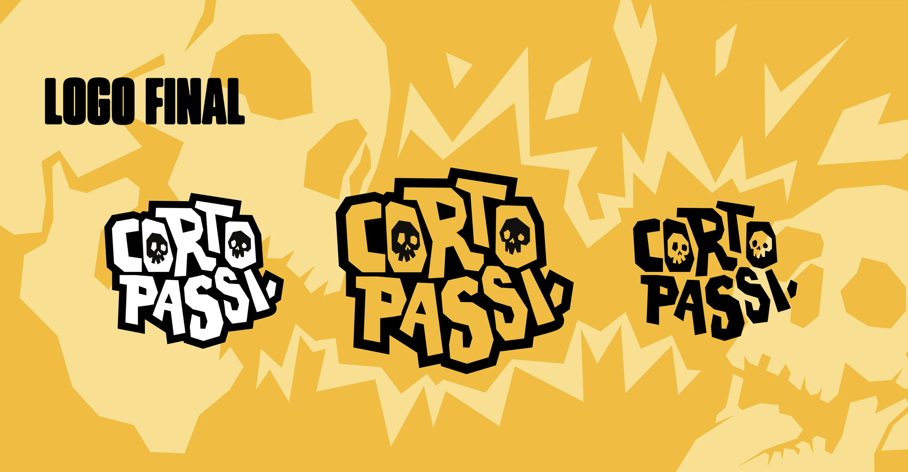
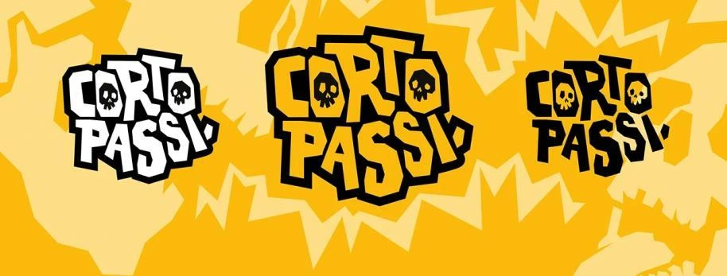
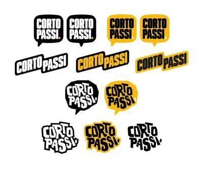
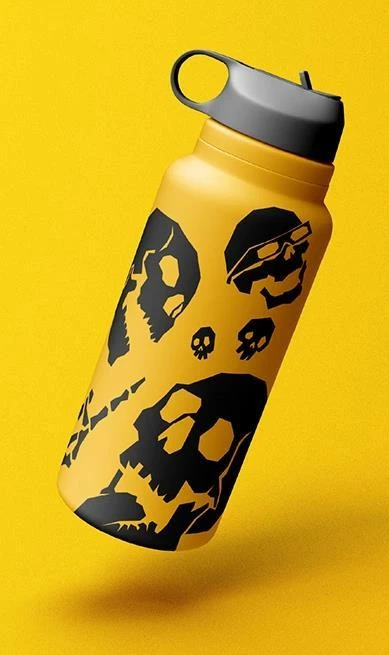
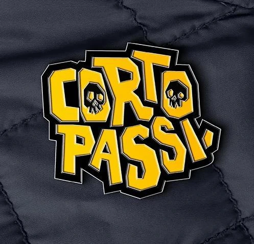

Cortopassi
My visual identity grew out of my relationship with comics and geek culture, references that have always been part of my journey. Elements such as skulls and ghosts appeared early in the process, when I was beginning to develop my own visual language.
In 2018, I created @phantom_comics to publish my drawings anonymously and build a project from scratch. After leaving it aside for a while, I returned to the idea in 2023 with @phantom_comics_23, exploring different kinds of content. Over time, the account moved closer to design and became my space as a designer.
Today, the name Phantom Comics no longer fully represents this new chapter. The identity is therefore moving closer to my own name, reflecting this transformation while keeping the elements that belong to my story.
The references to comics, skulls and ghosts remain as fragments of this journey, connecting the past to the present. More than a name change, this
new identity represents an evolution: a more personal, distinctive chapter connected to my work as a designer.





